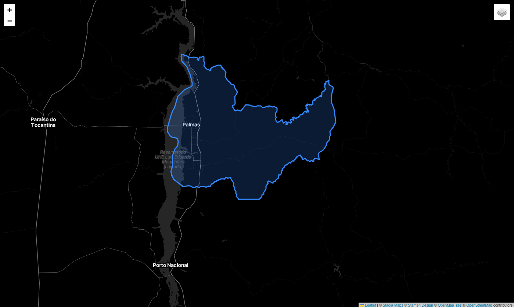
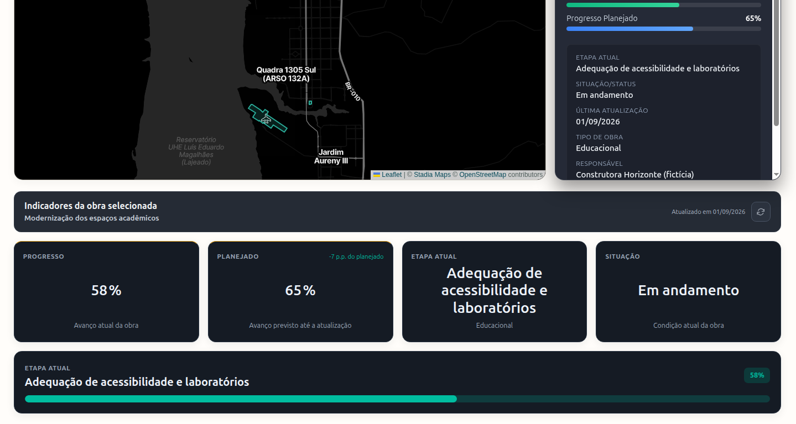

Sem clareza
O comprador vive sob ansiedade constante. Ele não consegue responder a perguntas básicas: como está minha obra? Em que fase estamos? O cronograma será cumprido?
Uma plataforma de engenharia moderna que reúne, em um só lugar, tudo o que as construtoras precisam gerenciar e que o cliente final deseja saber sobre a obra que está comprando.

A realidade do setor
Quando alguém compra um imóvel na planta, entra num verdadeiro limbo de informações. A construtora manda comunicados por canais soltos, o engenheiro atualiza planilhas internas de forma estática, e o comprador fica no escuro.
O comprador vive sob ansiedade constante. Ele não consegue responder a perguntas básicas: como está minha obra? Em que fase estamos? O cronograma será cumprido?
Cronogramas físicos, relatórios fotográficos, certidões e planilhas de medição financeira residem em silos e sistemas incompatíveis, dificultando a gestão ágil.
A falta crônica de transparência no avanço da obra resulta em reclamações constantes nos canais de suporte, retrabalho de atendimento e desgaste da reputação.
A nova era da construção
O Constructo centraliza cronogramas físicos, indicadores de progresso, relatórios fotográficos estruturados e dados de posicionamento geoespacial em uma única experiência integrada para gestores e clientes finais.
Visualize a localização exata de cada obra no mapa com delimitações em GeoJSON e acesso a indicadores operacionais contextualizados por região.
Uma linha do tempo interativa mostrando o progresso real de cada etapa, comunicados oficiais, fotos de evolução física e notificações automáticas.
O canal definitivo do comprador final: informações exclusivas sobre sua unidade, documentos fiscais, manual do proprietário e evolução física do bloco.

A jornada do dado
Mapa de satélite com polígonos GeoJSON delimitando as zonas de monitoramento.
Filtre por empreendimento e tenha um panorama resumido de todos os blocos e frentes.
Visualização instantânea do avanço físico, saldo financeiro e desvios de cronograma.
Mapeamento de interferências climáticas, atrasos em suprimentos e readequações.
Visualização de fotos georreferenciadas, relatórios técnicos e diários de obras assinados.
Tecnologia exclusiva
O módulo DOMINUS é o coração geoespacial do Constructo. Nenhuma outra solução no mercado brasileiro integra dados de planejamento físico-financeiro à navegação territorial interativa.
Módulos de produto
Perfis específicos para construtoras, engenheiros responsáveis e investidores finais.
Visualização global e detalhada de múltiplos canteiros de obra ativos de forma simples.
Aprovações seguras de medição física diretamente do app para garantir agilidade.
Carregamento prático de registros fotográficos cronológicos de todas as etapas.
Notícias e atualizações sobre as principais obras para manter todos engajados.
Foco na comunicação clara e transparente com o comprador da planta.
Diário robusto de auditoria com histórico permanente de logs operacionais.
Separação de dados 100% garantida entre construtoras por arquitetura segura.
Quem faz acontecer
Quatro desenvolvedores do Bacharelado em Ciência da Computação da UFT, focados em soluções práticas e modernas de engenharia de software para transformar o canteiro de obras.
Desenvolvedor & Co-founder
Desenvolvedor & Co-founder
Desenvolvedor & Co-founder
Desenvolvedor & Co-founder
Estamos buscando construtoras pioneiras e parceiros estratégicos que queiram elevar o patamar da comunicação no mercado imobiliário. Solicite agora sua demonstração guiada da plataforma.